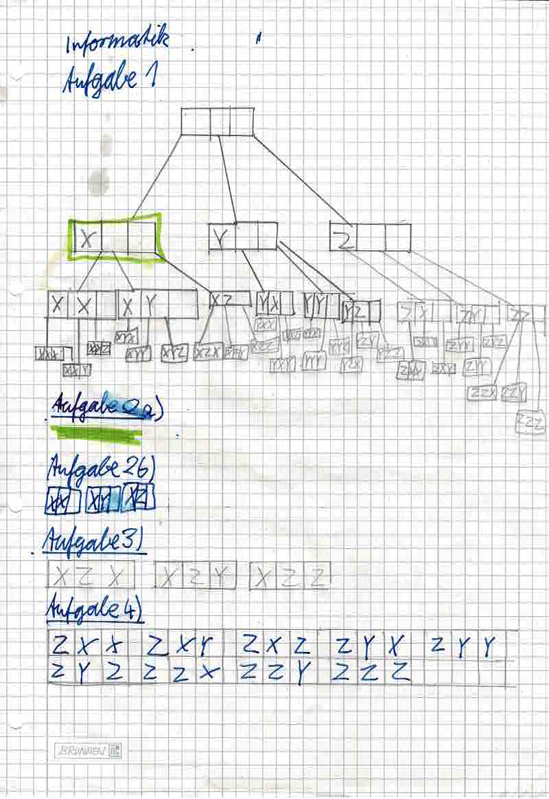
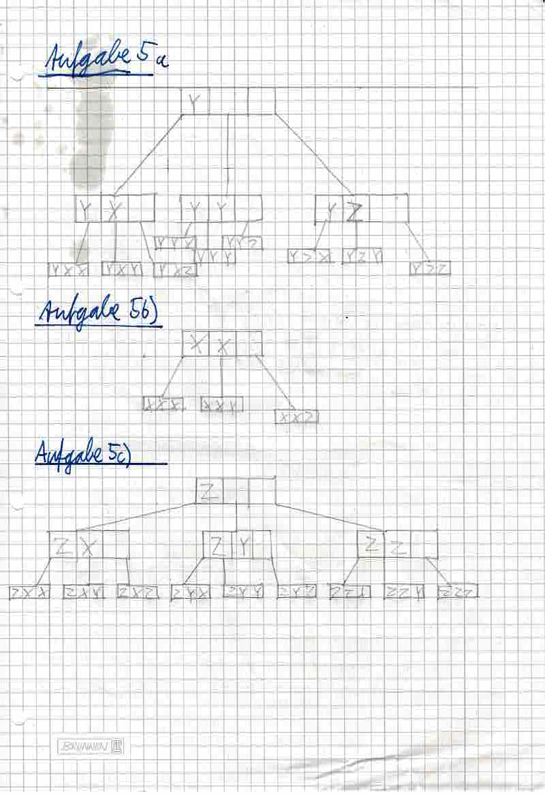
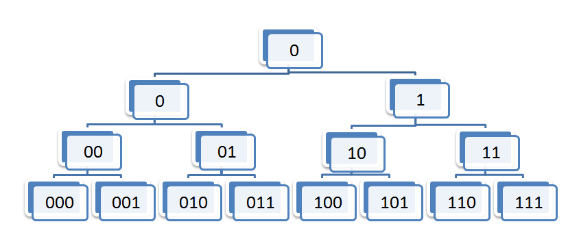

Dies sind die Aufgaben von Aussenstelle.
Aufgaben 1 - 5:

Abbilung 1: Arbeitsblatt mit meinen Lösungen zu den Aufgaben 1 - 4

Abbilung 2: Arbeitsblatt mit meinen Lösungen zu den Aufgaben 4 und 5
Aufgrund der glorreichen Idee meines Bruders, der eine Flasche Öl auf die Blätter gestellt hat sind leider Ölflecken auf dem Blatt.
Die restlichen Aufgaben folgen.
Aufgaben 6: Liste Alle Wörter der Länge 3 über dem Alphabet {0, 1} auf, indem du ähnlich wie in Aufgabe 1 einen Baum zeichnest, dessen Blätter alle gesuchten Wörter beinhaltet. Löse die Aufgabe an einem Computer.

Abbilung 3: Das Gesuchte Baumdiagramm aus Aufgabe 6
Created with HTML